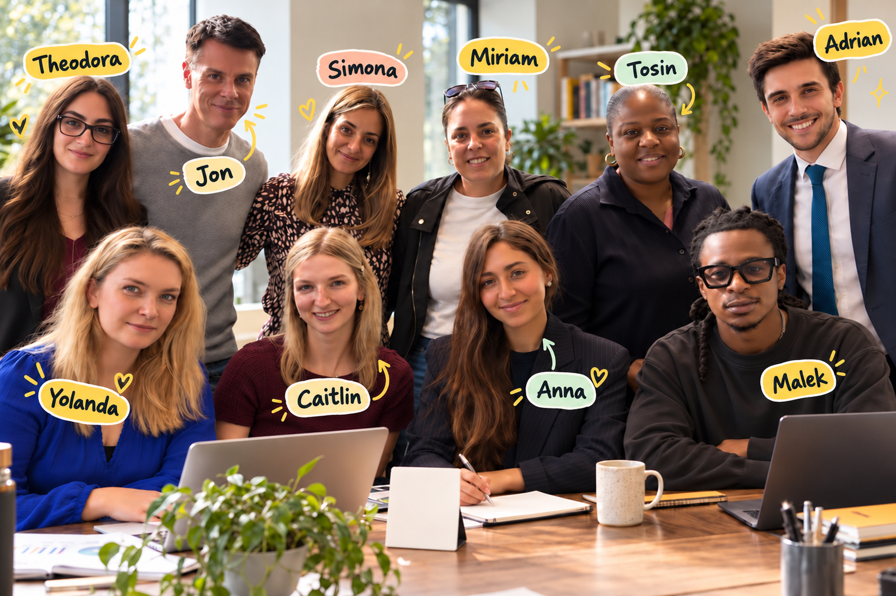

Our Purpose
We believe technical talent can create real social impact when connected to meaningful healthcare challenges.
Code With Impact brings together skilled volunteers and healthcare teams to deliver practical data, analytics and AI support.
Code With Impact is powered by volunteers, including the founder, working together to support healthcare and research projects with data, analytics and AI expertise.

We believe technical talent can create real social impact when connected to meaningful healthcare challenges.
Practical impact, ethical AI, transparency, collaboration and respect for healthcare expertise.
Our volunteers come from data, analytics, modelling, engineering and technology roles across industries, and bring those skills into healthcare and research projects through Code With Impact.
Simona founded Code With Impact during her father's illness with bulbar-onset Motor Neurone Disease and frontotemporal dementia. She brings more than 10 years of quantitative analytics experience and created the initiative to turn personal helplessness into practical action by connecting data professionals with healthcare researchers who need support.
View LinkedInCaitlin brings around four years of quantitative analytics experience across Python, SAS and SQL. With a mathematics background and a strong interest in meaningful problem-solving, she joined to apply her technical skills to real-world healthcare challenges.
View LinkedInAnna is a Senior Risk Analyst in finance with a passion for coding, analysis and making a practical difference. After her father was diagnosed with MND, she joined to support research into rare diseases and contribute her skills where they can help others.
View LinkedInYolanda has spent a decade working in quantitative analysis, with expertise in advanced data analysis and modelling. She studied Computer Science before completing a Master’s degree in Quantitative Finance, and is passionate about applying data-driven insights to real-world challenges. Having lost her father to cancer, she is keen to use her skills to support medical research and help advance work that can make a meaningful difference to patients and their families.
View LinkedInAdrian studied Mathematics and Computer Science and has spent the past nine years in credit risk for international institutions. He brings model thinking, governance and analytical clarity, with a strong personal interest in work connected to cancer research and neurodegenerative disease.
View LinkedInTheodora is a Senior Data Scientist with 10 years of experience in credit risk modelling within the banking industry. She combines strong technical expertise with experience in analytical leadership and problem-solving. Having lost her cousin to cancer, and with several family members having survived the disease, she is motivated to apply her analytical skills to medical research and support initiatives that improve the lives of patients and their families.
View LinkedInTosin is a Data Manager with over 12 years of experience across project management, procurement, model risk and data management, she brings expertise in governance and data driven problem solving. Having lost loved ones to terminal illnesses, she is motivated to use her skills to support AI-driven medical research and initiatives that save lives.
View LinkedInMalek is a quantitative analyst in credit risk, with experience across Python, SAS, SQL, R with an MSc in Statistics with Financial Mathematics. He joined Code With Impact to use his modelling and analytical skills on healthcare and research projects.
View LinkedInJon brings 24 years of experience in finance, mostly in modelling teams, along with a strong focus on collaborative problem-solving and leadership. He joined to use modern analytical tools alongside others who want to create meaningful, data-driven impact in healthcare.
View LinkedIn